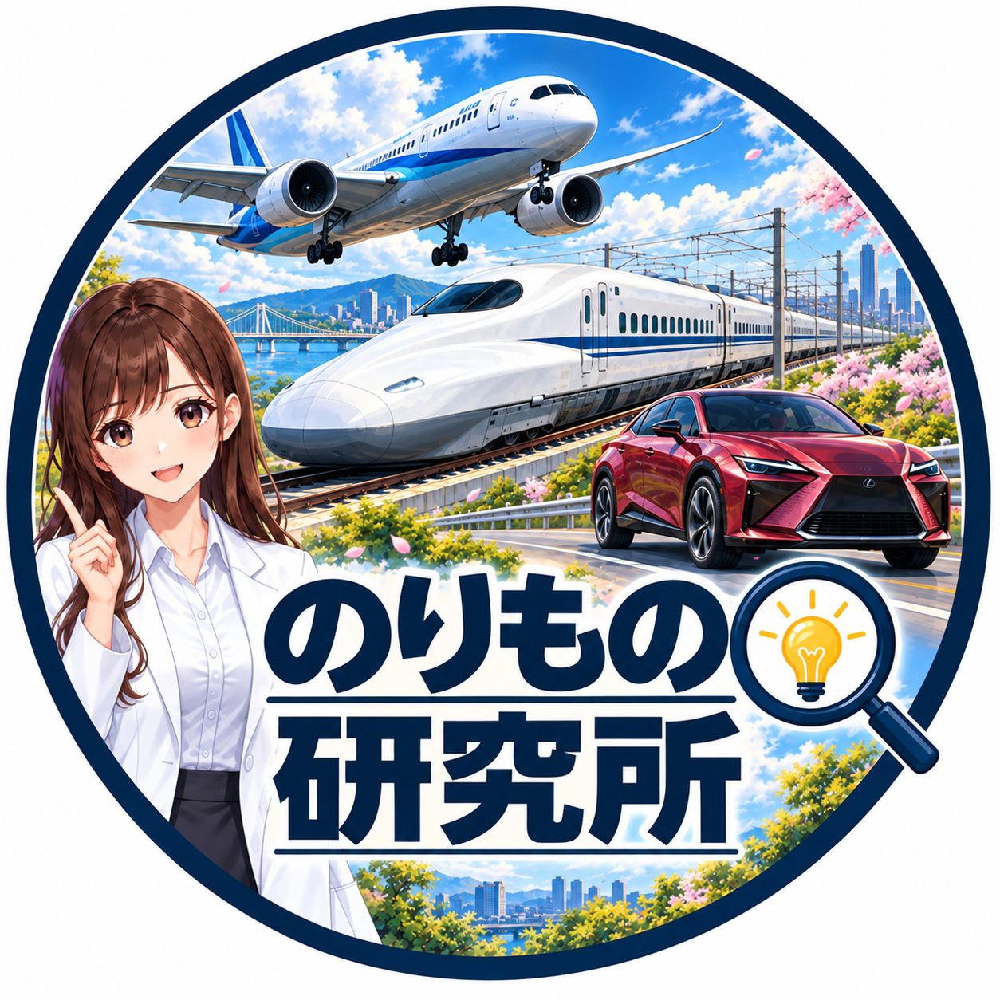

01 GLOBAL AUTOMOTIVE STORIES
TFL Japan↗
世界のクルマを、日本語で。
本場アメリカのオフロード、話題の新型車、意外な比較テスト。TFL Studiosの映像を日本語化し、現地ならではの視点とクルマのリアルな魅力を届けます。
チャンネルを見る ↗SELECTED STORY
軽トラ × ランドクルーザー。
小さな一台が、オフロードの王者に挑む。
いつもの景色に、新しい発見を。
映像と言葉で、乗り物の面白さを
もっと遠くへ届けていく。
クルマの走りに心が躍る。
いつも乗る電車の仕組みが気になる。
そんな好奇心が、私たちの出発点です。
MikanWorksは、動画を通じて乗り物の魅力を届ける個人事業です。海外のリアルなクルマ体験を日本語で伝える「TFL Japan」と、鉄道やモビリティの話題を掘り下げる「のりもの研究所」。異なる二つの視点から、知る楽しさと、見る楽しさをつくっています。
現地の熱量を、そのままに。
身近な疑問を、もっと深く。
世界のクルマを、日本語で。
本場アメリカのオフロード、話題の新型車、意外な比較テスト。TFL Studiosの映像を日本語化し、現地ならではの視点とクルマのリアルな魅力を届けます。
チャンネルを見る ↗軽トラ × ランドクルーザー。
小さな一台が、オフロードの王者に挑む。

いつもの乗り物に、新しい発見を。
鉄道の仕組みから、クルマの技術、モビリティの最新トピックまで。「なぜ？」をひとつずつ掘り下げ、背景や歴史とともに、わかりやすく紹介します。
チャンネルを見る ↗試合が終わる、その瞬間に。
甲子園の帰り道を支える鉄道の工夫。
思わず知りたくなる疑問や、
新しい視点を探す。
映像と言葉をつなぎ、
届くストーリーに仕立てる。
一本の動画から、
次の好奇心につなげる。
お仕事・コラボレーションのご相談は、
下のお問い合わせフォームからお送りください。
最新の動画や活動は、
それぞれのYouTubeチャンネルで。
ご入力いただいた情報は、お問い合わせへの対応・連絡に使用します。
送信内容はGoogleフォームを通じてMikanWorksが受け取ります。
フォームが表示されない場合は、別のタブでフォームを開いてください。